단원
1
2
3
4
5
6
놀이 시작
놀이 방법
놀이 방법
단원과 출제 문항 수를 정합니다.
15초의 제한 시간 동안 학생들은 문제의 O,X를 몸으로 나타냅니다.
모든 학생들이 답을 나타내면 선생님은 정답을 확인합니다.
문제를 틀린 학생은 탈락하고, 맞힌 학생은 다음 문제를 풉니다.
모든 학생이 문제를 다 풀지 못하고 탈락했을 경우, 를 이용하여 퀴즈를 초기화 합니다.
끝까지 문제를 다 푼 학생의 이름을 입력합니다.
15
+ 는 분자 3과 2는 그대로 두고,
분모끼리 더합니다.
4
는 자연수 4에서 1만큼을
로 바꾸어 계산합니다.
은 입니다.
우유 L를 사서 집에 오니
냉장고에 우유 L가 남아 있었습니다.
우유는 모두 L가 있습니다.
잘못 계산한 친구는 은빈이입니다.
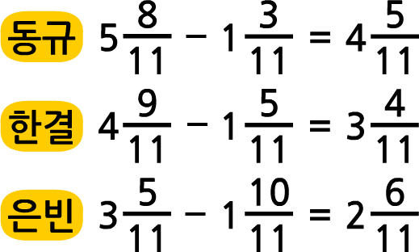
=
에서
안에 수는 4입니다.
+ = 입니다.
-
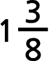에서 자연수는 자연수끼리,
분수는 분수끼리 뺍니다.
안에 알맞은 수는 3입니다.
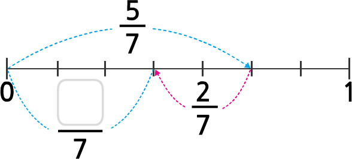
+ = 입니다.
두 변의 길이가 같은 삼각형을
이등변삼각형이라고 합니다.
이등변삼각형일 때,
안에 알맞은 수는 7입니다.
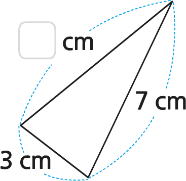
정삼각형은 세 각의 크기가 모두 다릅니다.
한 각이 예각인 삼각형을
예각삼각형이라고 합니다.
정삼각형은 예각삼각형입니다.
안에 알맞은 수는 50입니다.
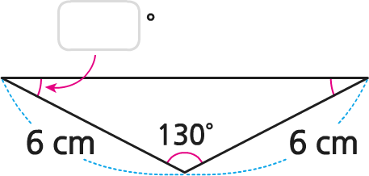
한 각이 둔각인 삼각형은 둔각삼각형입니다.
이등변삼각형은 예각삼각형입니다.
안에 알맞은 수는 60입니다.
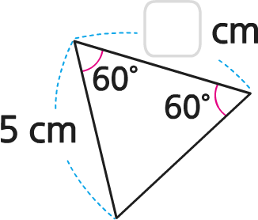
세 변의 길이가 4 cm, 3 cm, 4 cm인 삼각형은
이등변삼각형입니다.
분수 는 소수로 0.24라 쓰고,
영 점 이십사라고 읽습니다.
8.173의 소수 둘째 자리 숫자는 7입니다.
0.520과 0.52는 다른 수입니다.
소수 5.265는 0.001이 5265개인 수입니다.
0.01의 10배는 0.001입니다.
1.9+0.8=2.7입니다.
0.123과 0.124 중에서
더 큰 소수는 0.124입니다.
685의 은 0.685입니다.
5.2
-
0.85=4.35입니다.
1.63보다 4.5만큼 더 큰 수는 2.08입니다.
두 직선이 만나서 이루는 각이 직각일 때,
두 직선은 서로 수직이라고 합니다.
서로 만나지 않는 두 직선을 평행하다고 하고,
평행한 두 직선을 평행선이라고 합니다.
마름모는 네 변의 길이가
모두 같은 사각형입니다.
마름모는 네 각이 모두 직각인 사각형입니다.
정사각형은 마주 보는 두 쌍의 변이 평행합니다.
마주 보는 한 쌍의 변이 평행한 사각형을
평행사변형이라고 합니다.
주어진 물건에서 평행선을 찾을 수 있는 것은
공책과 철봉입니다.
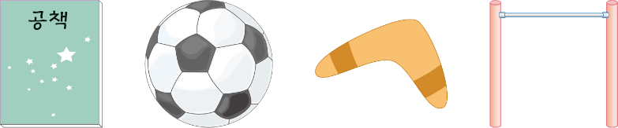
평행사변형은 마주 보는
각의 크기가 서로 다릅니다.
직사각형은 네 변의 길이가
모두 같은 사각형입니다.
평행한 변이 한 쌍이라도 있는 사각형을
사다리꼴이라고 합니다.
꺾은선그래프는 수량의 변화를
한눈에 알 수 있습니다.
꺾은선그래프에서 필요 없는 부분은
물결선으로 줄여서 그릴 수 있습니다.
체온이 가장 낮은
시각은 11시입니다.
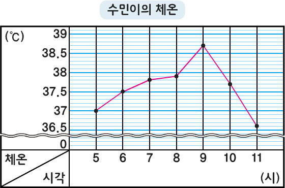
체온의 변화가 가장 적은 시간은 9시에서 10시 사이입니다.
물결선으로 줄일 수 있는 가장 큰 수는 30℃입니다.
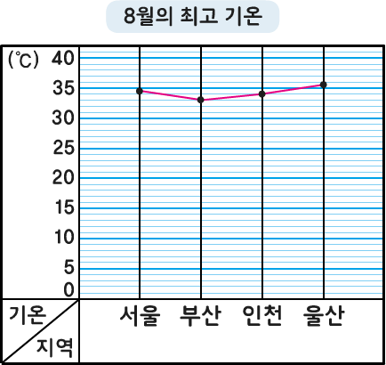
가로 눈금에는 기온을 나타내고, 세로 눈금에는 지역을 나타냅니다.
학교의 학생 수가 변화하는 모습을 보려면
막대그래프로 나타내면 됩니다.
꺾은선그래프는 각 수량을
그림으로 나타냅니다.
작은 눈금 한 칸의 크기는 0.2입니다.
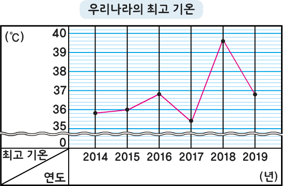
변화하는 모습을 뚜렷하게 알기 위해
세로 눈금 한 칸의 크기를 크게 잡아야 합니다.
선분으로만 둘러싸인 도형을
정다각형이라고 합니다.
정다각형은 모든 각의 크기와
모든 변의 길이가 같습니다.
대각선은 정다각형에만 있습니다.
대각선의 개수가 가장 많은 것은
정팔각형입니다.
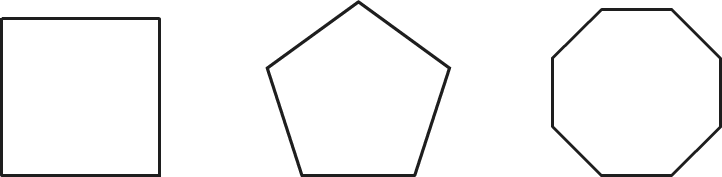
정팔각형의 한 각의 크기는 135°입니다.
사각형만으로는 아래 도형을
빈틈없이 채울 수 없습니다.
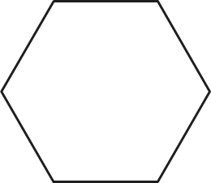
안에 알맞은 수는 15입니다.
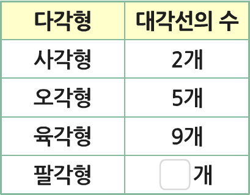
두 도형은 모든 변의 길이가 같지 않기 때문에
정다각형이 아닙니다.
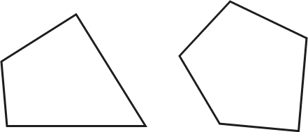
삼각형의 대각선 수는 2개입니다.
정삼각형 7개로 정칠각형을 만들 수 있습니다.
1
/10
정답
다음 문제
처음부터
친구들이 끝까지 잘 풀었어요.
모두 축하해 주세요.
다시 하기
놀이 결과